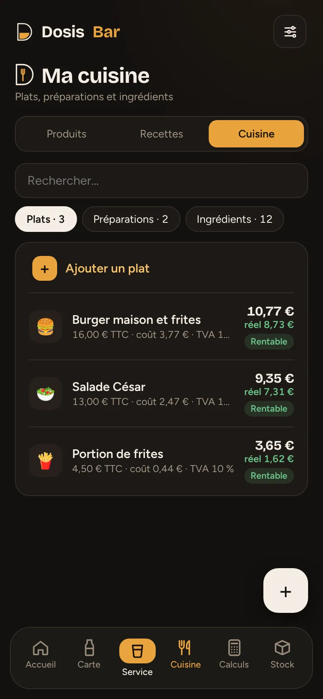
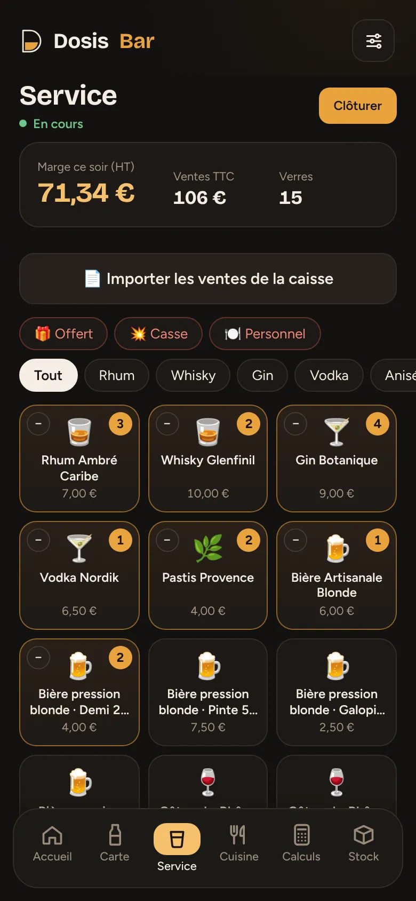

Dosis Bar
Bars, cafés, caves, bars à cocktails
- La marge de chaque verre, dose et cocktail
- Le service en direct, verre par verre
- L'inventaire en scannant les bouteilles
- Vin au verre, bière pression, café
- Barmen sans accès aux prix d'achat
Prix trop bas, main lourde, casse, plats mal calculés, stock qui dort. Dosis Bar retrouve ce que vous perdez, au bar comme en cuisine, et vous dit quoi corriger. Faites le test avec une de vos bouteilles.
Un centilitre de trop dans chaque verre, c'est de ventes perdues par an, sur cette seule bouteille.
Calculé avec votre verre ci-dessus, pour 10 verres de ce produit par soir, 6 soirs sur 7. Multipliez par toute votre carte, ajoutez la cuisine : Dosis Bar chiffre chacune de ces fuites et vous rend cet argent.
Les phrases qu'on entend chaque jour derrière le comptoir et en cuisine. Dosis Bar répond à chacune.
Votre bénéfice du mois, charges comprises, chaque matin en un coup d'œil.
Le bon prix de chaque verre et de chaque plat, avec ce que la correction vous rapporte par mois.
Le coût exact de chaque assiette, ingrédient par ingrédient, et le prix conseillé.
Le stock baisse tout seul pendant le service, l'inventaire chiffre l'écart en euros.
Les commandes préparées par fournisseur, envoyées par email ou WhatsApp.
Le bilan du mois prêt à envoyer : ventes, TVA, achats, marge, pertes.
Avant
Avec Dosis Bar
Bars, cafés, caves, bars à cocktails
Restaurants, bars-restaurants, fast-foods, traiteurs
À ajouter à votre abonnement pour 15 € HT par mois, seulement si vous servez à manger.
Pas un logiciel de plus à apprendre : votre journée, telle qu'elle se passe déjà, avec les chiffres en plus.
Avec l'option Dosis Resto, chaque plat a son coût exact, ingrédient par ingrédient, et son prix conseillé. Le burger qui ne rapporte plus assez est signalé avant le coup de feu.

Le Dosis Score vous dit en un chiffre comment va votre carte. Les prix trop bas sont listés avec ce qu'ils vous coûtent par mois. Un bouton suffit pour les corriger.

Un tap par verre vendu. La marge de la soirée monte en direct et le stock baisse tout seul. Vos barmen n'ont accès qu'au service : ils ne voient jamais vos prix d'achat.

Le bilan s'affiche : ventes, marge, ce qui a le plus rapporté. Vous avez une caisse ? Importez son fichier de ventes, Dosis Bar fait le reste.

Scannez vos bouteilles avec l'appareil photo du téléphone. Dosis Bar compare avec ce qui a été vendu et chiffre l'écart en euros : casse, verres offerts, doses trop généreuses.

Dosis Bar est créé par Paris Rhum Club, importateur de rhums et de boissons cubaines à Paris depuis 2020. En livrant des bars et des restaurants, une question revenait toujours : « combien je gagne vraiment sur ce verre, sur cette assiette ? »
Les outils existants étaient chers, compliqués, pensés pour les grandes chaînes. Nous avons fait celui que nous aurions voulu offrir à nos clients : simple, au juste prix, pour le bar comme pour la cuisine.
Par établissement, toute votre équipe incluse. Pas de frais d'installation, pas de rendez-vous commercial. Essai gratuit de 14 jours, sans carte bancaire. En payant à l'année, 2 mois sont offerts.
Bar pilote
19 €HT par mois
2 mois offerts, puis ce prix est bloqué à vie. Pour les premiers établissements qui testent Dosis Bar avec nous et nous donnent leur avis.
Devenir bar pilotePlaces limitées
Dosis Bar
29 €HT par mois
Le prix d'une bouteille par mois. Ou 290 € HT par an, 2 mois offerts.
Option Dosis Resto : + 15 € HT par mois. Fiches plats, préparations, coût de l'assiette, pour restaurants, fast-foods et traiteurs.
Créer mon compteDosis Bar Pro
59 €HT par mois
Ou 590 € HT par an, 2 mois offerts.
Créer mon compteOui. Avec l'option Dosis Resto, vous calculez le coût de chaque plat et de chaque préparation, le prix conseillé et les allergènes. Et comme un restaurant vend aussi des boissons, Dosis Bar suit la marge de votre carte des vins, des bières et des cafés.
Non. Dosis Bar s'ouvre dans le navigateur de votre téléphone, de votre tablette ou de votre ordinateur. Vous pouvez l'ajouter à l'écran d'accueil pour l'ouvrir comme une application. Tout est expliqué pas à pas dans le guide d'utilisation.
Le service continue. Les ventes sont gardées sur le téléphone et envoyées dès que la connexion revient.
Non. Vous les invitez avec un code : ils n'ont accès qu'au mode Service, sans les prix d'achat ni les marges.
Si elle sait exporter les ventes en fichier CSV ou Excel, oui : SumUp, Flatpay, Zelty, Lightspeed, L'Addition, Square, Tiller et les autres. Dosis Bar reconnaît les colonnes et relie les noms à votre carte. Sans caisse, le mode Service fait le travail.
Vous essayez gratuitement pendant 14 jours, sans carte bancaire. Ensuite, l'abonnement Dosis Bar coûte 29 € HT par mois et par établissement, toute l'équipe incluse, sans engagement. L'option Dosis Resto ajoute 15 € HT par mois, et la formule Pro, Dosis Resto inclus, coûte 59 € HT. En payant à l'année, vous avez 12 mois pour le prix de 10. Les premiers établissements pilotes ont 2 mois offerts puis 19 € HT par mois, prix bloqué à vie.
En Europe, sur des serveurs sécurisés. Elles vous appartiennent et ne sont jamais revendues. Tout est expliqué dans la politique de confidentialité.